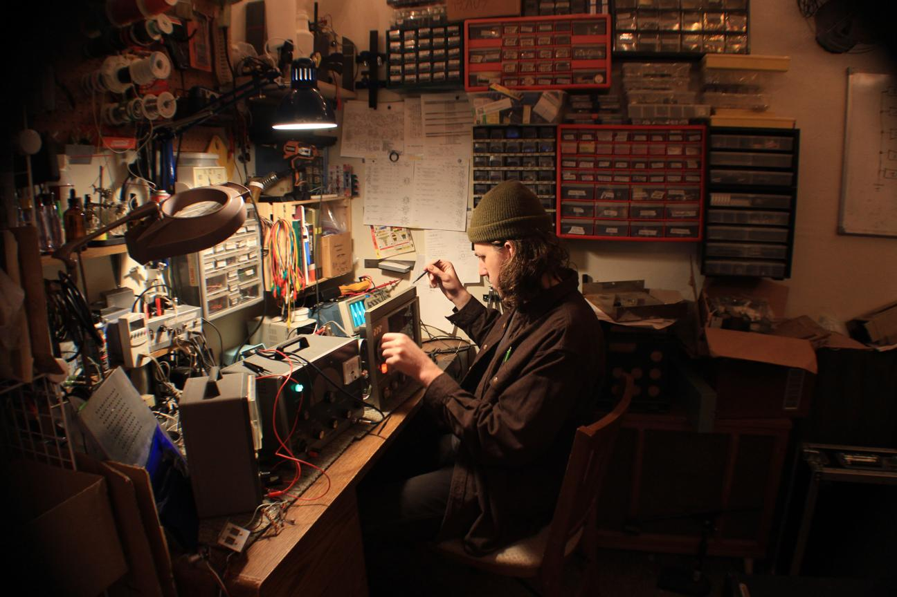

I build and repair electronics in Santa Cruz, CA and I started this website to document work I have done through my business and personal projects as well as share technical information and ideas with other nerds who like that kind of thing too. I studied robotics engineering at UC Santa Cruz and have always had a passion for audio which is what led me to pursue music electronics. Most of the projects that I do are audio/music-centric builds and repairs of equipment. If you are in need of repair, interested in a custom build, or have any questions send me a message.
